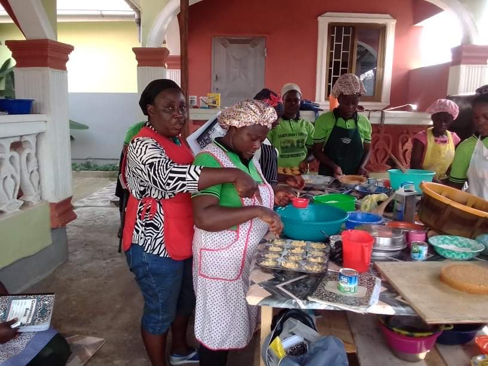

Pastries and Catering
The women and youth work on pastry and catering management skills, learning the in and outs of catering business. They make pastries for specific events I.E Birthdays, social gatherings, weddings and even graduation venues. The youth are taught the basics of preparing pastries, providing food services for clients, proper utilization of various kitchen equipment, supply management, and sanitation in a kitchen setting.
Self Care

We emphasize self care within our program, so that the youth know the importance of taking care of themselves and their general wellbeing. Providing them with more information about the benefits of having adequate quality sleep, proper nutrition, and understanding the importance of exercise both physically and mentally.
Women's Engagement
Women empowering women to better assist their husbands and families isessential in our program. We believe it creates a stronger more empowered community. We accomplish together and celebrate one another, and we foster a environment of love and unity. We also provide counseling so women have a safe space to be vulnerable and to get answers that they need.
Graduation
We celebrate the youth by keeping a graduation ceremony for them. To congratulate and honor them in there growth, and achievements in the program. The students have worked hard in gaining new skills, and talents. So we aim to highlight them on both their academic and extracurricular achievements.
Business Development
The youth are taught entrepeneurship, so they can use their learned skills to provide services and products for clients. This will help them to build confidence in their own abilities but also teaching them to self-sufficient in making money for themselves, as they continue to grow.
Design
We teach the introductory courses in design to help the youth to learn how to use their creative minds to bring to fruition wonderful crafts and designs that they can share with the world. They are introduced to different design principles, the development process and learn how to utilize the skills that they gain to help in their daily lives. Once they are taught the fundamentals through these courses and activities, they'll be able to build upon their abilities with practice. They can then provide services to people in the community, and help themselves in starting their own businesses in their futures.
Interior Decoration/Crafts
Learning crafts for interior decorations along with event planning. The youth will learn a variety of crafting skills to be able to set the aesthetic and decoration for events.

Sewing
It is a introduction into developing skills for tailoring designs, repairs for a longer lifespan of clothing items, simple mends and alterations. With advancing in these skills the women and youth will be able to make their own clothes but also make them more unique, than the standard clothing.